TOKYO東京
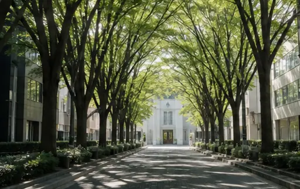
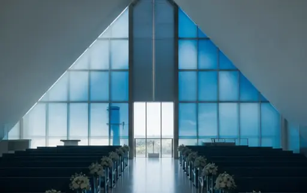
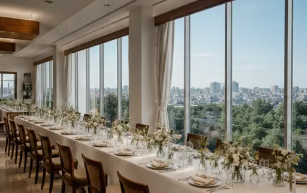
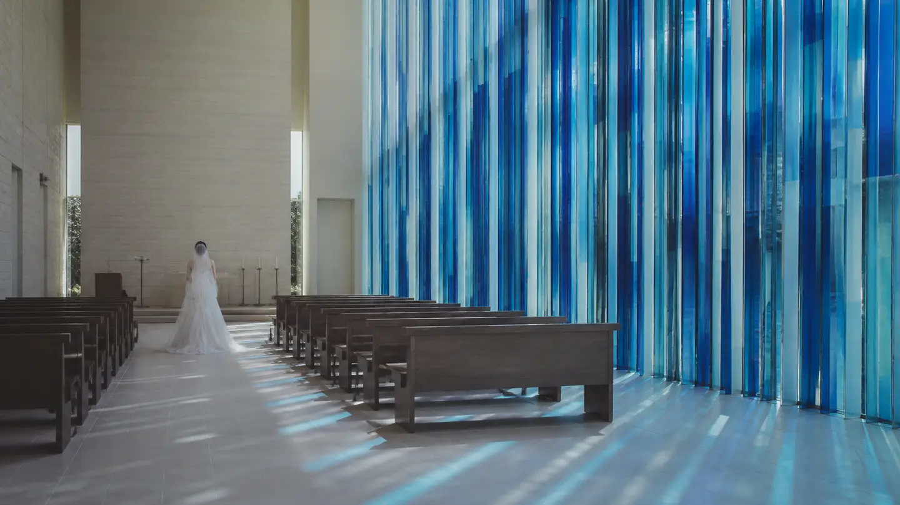
Deep Azure
AZUREVE WEDDING
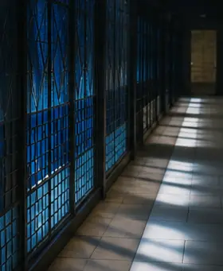
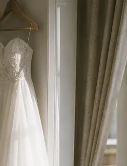
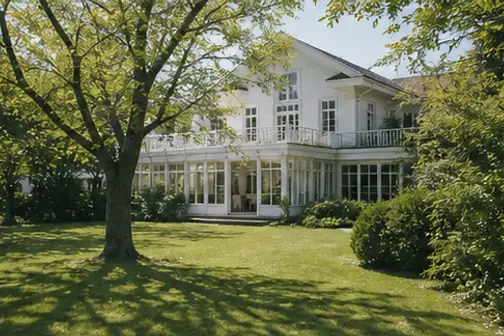
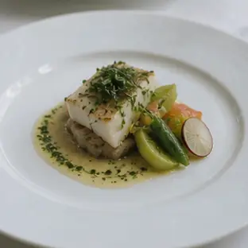
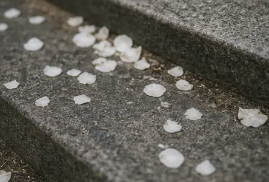
扉が開くまでの数秒に、これまでのぜんぶが集まる。アジュレーヴのチャペルは、その一瞬のためだけに光を設計しました。
披露宴は、貸し切りの一軒家で。料理の温度も、席の間隔も、音の大きさも、ふたりの声で決められます。
正解をなぞるのではなく、ふたりの基準でつくる一日を。それが17年、アジュレーヴが変えずにいることです。
一軒家の結婚式は
AZUREVE
アジュレーヴ
その日の空の色を、ふたりの色に。
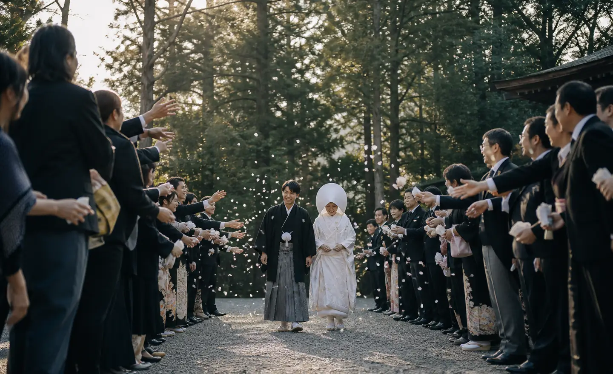
まばゆい時間は、準備のほうでつくられる。
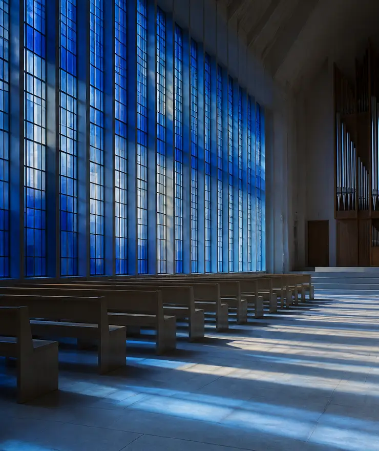
RECOMMEND1
南向きの開口に、濃さの違う青のガラスを378枚。午前は淡く、夕方は深く。同じ会場でも、式の時刻によって床に落ちる青が変わります。挙式の30分は、その日いちばんきれいな光にあわせて組み立てます。
「扉が開いた瞬間、床が青かった」と、まずそこから話してくださる方が多いです。
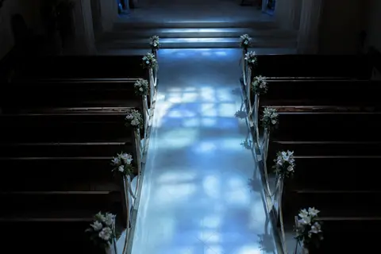
天井高14m。パイプオルガンの低音が床から伝わる、静かな30分間。
お客様の声
式の前に、何時の光がきれいですかと聞かれたのが意外でした。11時と言われてそのまま決めたのですが、当日アルバムを開いたら、どの写真も同じ青が入っていて驚きました。親族の集合写真まで揃って見えます。友人には照明を入れたのかと聞かれましたが、全部ガラスから入った自然の光です。
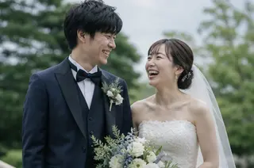
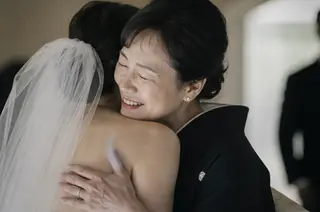
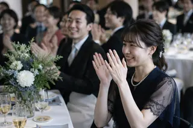
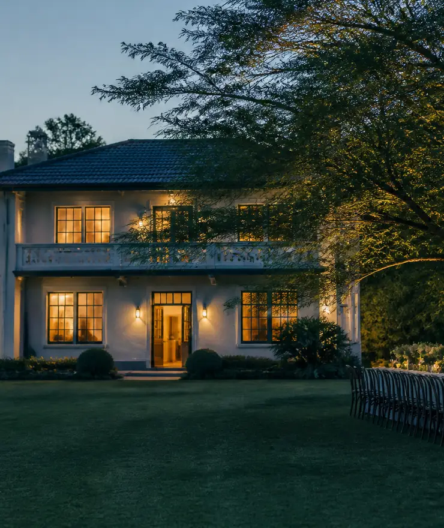
RECOMMEND2
1日1組。エントランスも控室もガーデンも、朝から夜までふたりとゲストだけのものです。別の披露宴とすれ違うことも、時間に追われて席を立つこともありません。
「実家に招くみたいでした」という感想が、いちばんうれしいです。
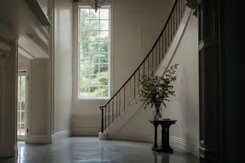
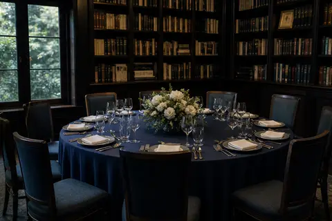
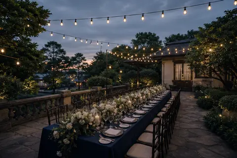
バンケットは最大120名。少人数なら2階のライブラリーを一室まるごと。
お客様の声
10時に入って、夜まで同じ建物にいました。母が靴を脱いでソファで休んでいたり、甥がガーデンを走り回っていたり、途中から誰も来賓の顔をしていませんでした。別のグループとすれ違わないだけで、こんなに気が楽になるとは思っていませんでした。
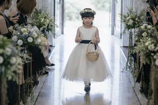
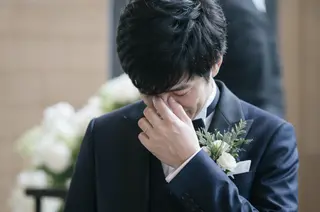
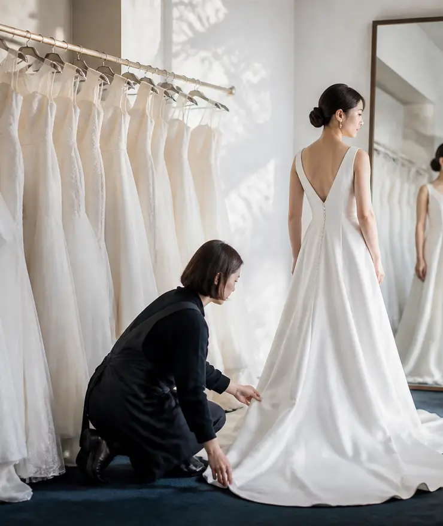
RECOMMEND3
会場の中にサロンがあります。担当は最初の試着から当日の着付けまで同じスタイリスト。チャペルの光でどう見えるかを知っている人が選ぶので、写真に残ったときに迷いがありません。取扱いは98ブランド。
「これ、チャペルで着たらどうなりますか」に、その場で答えられるのが強みです。
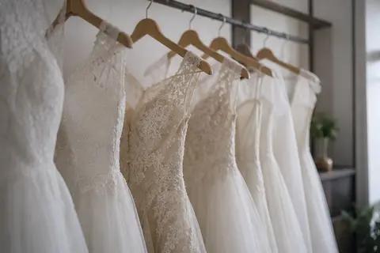
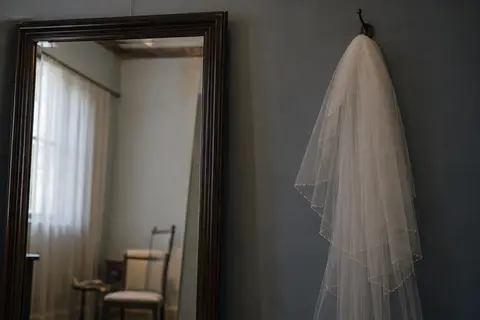
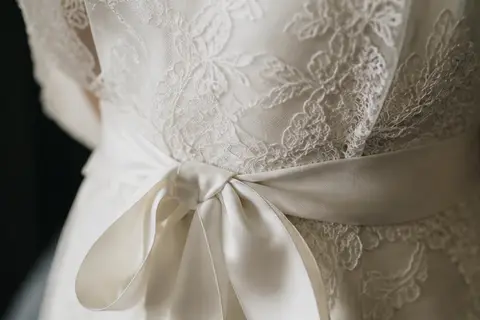
98ブランド、1,200着。青の光に映える白だけを毎季選び直しています。
お客様の声
3着目まではずっと決められずにいました。4回目に同じ担当の方が、チャペルの光だとこの生地は青く沈みますと言って一着出してくれて、着た瞬間にこれだと思いました。毎回はじめから説明しなくていいのが、思っていた以上に楽でした。
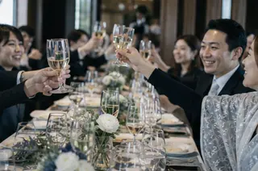
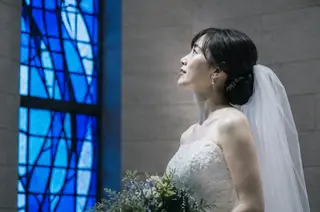
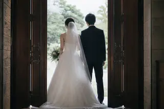
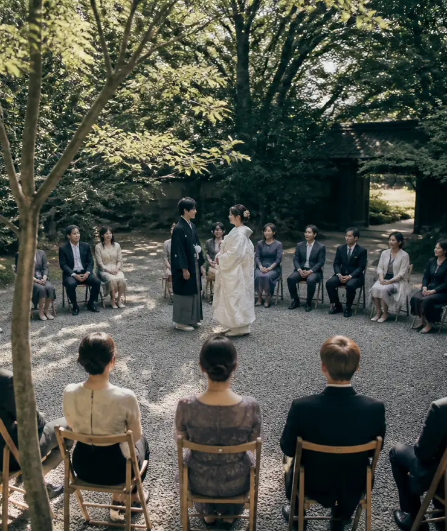
RECOMMEND4
決まった文面はありません。半年かけて、ふたりの言葉で誓いを書きます。証人はゲスト全員。指輪を運ぶのが祖母でも、10歳の甥でも構いません。
書けないと言っていた方ほど、当日はいちばん長く話されます。
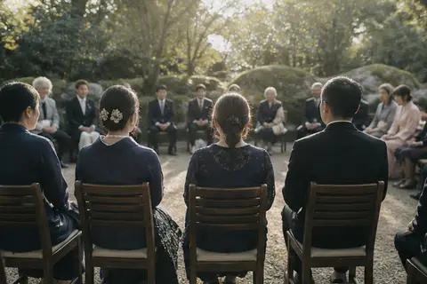
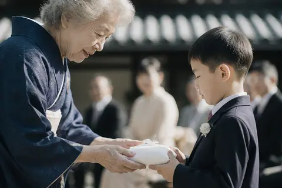
誓いのノートは当日そのまま持ち帰れます。表紙はふたりで選んだ布で。
お客様の声
誓いの言葉は半年かけて二人で書きました。指輪を運ぶのは祖母にお願いしました。歩くのが遅いので時間がかかりましたが、誰も急かさず、会場が静かなまま待ってくれました。式のあと、祖母が泣いているのを初めて見ました。
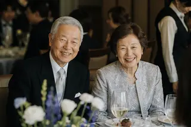
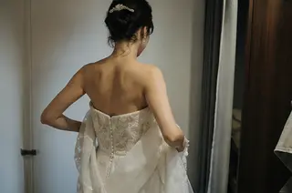
父親と母親だけが入れる時間を、式の前に30分とります。
両家の親から受けた火を、ふたりで一つの灯りにします。
当日まで相手に見せない手紙を、その場で読み上げます。
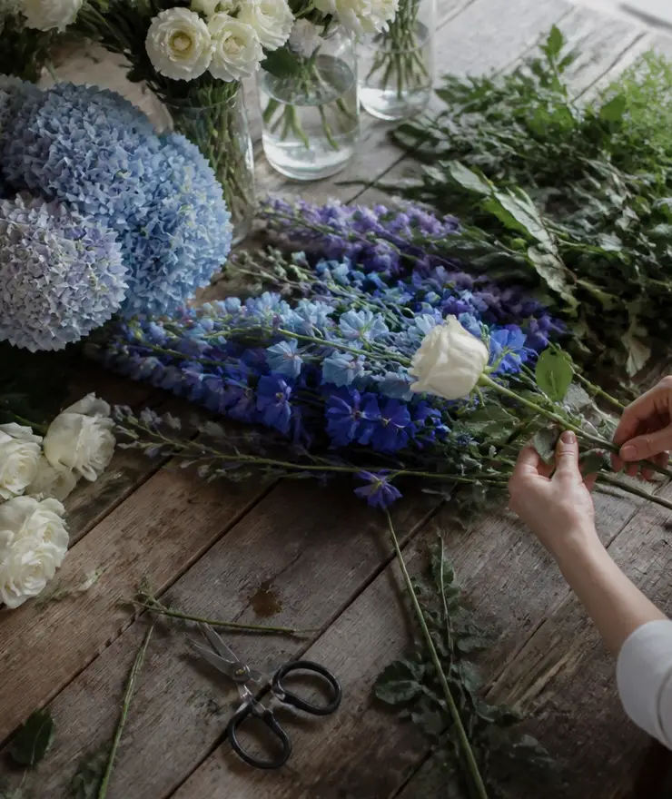
RECOMMEND5
装花は会場ごとの専属チームが、その週に市場で選んだ花で組みます。カタログから選ぶ形ではないので、同じ月でも二度と同じ会場になりません。
「前に見た写真と違う」は、うちでは褒め言葉です。
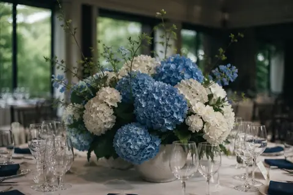
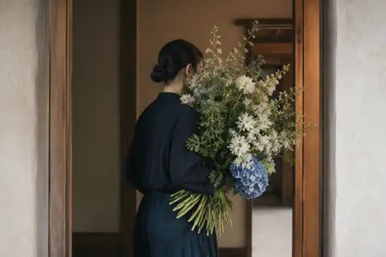
Hydrangea｜梅雨の2週間だけ組める、青の濃淡だけでつくる装花。
お客様の声
一年前に友人の式で同じ会場に来ていました。当日、入った瞬間に別の場所かと思いました。装花が違うだけで、天井の高さまで違って見えます。青の濃さを三段階で組んでもらったので、写真に撮ったときの奥行きが全然違いました。
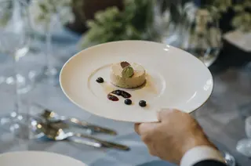
AZUREVE FLOWER 2026 STYLIST
花師
生花店の家に生まれ、造園会社で7年。「花は部屋のほうに合わせる」という考えで、2019年から6会場の装花を監修。庭づくりから空間装花までを一人で組み立てる。
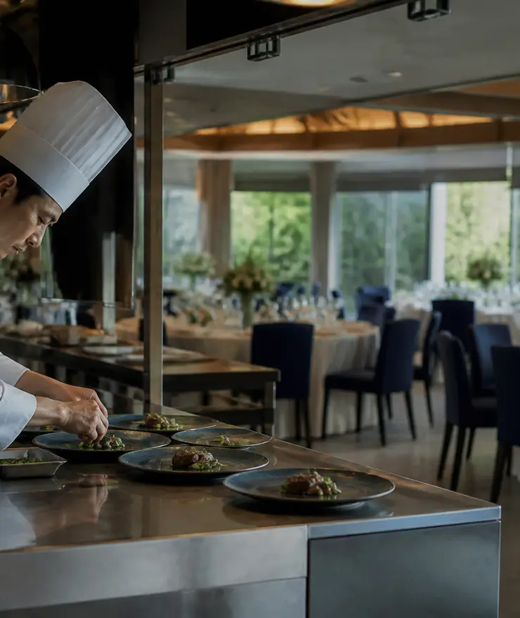
RECOMMEND6
6会場すべてに専用の厨房があります。焼き上がりから席までの距離は、いちばん遠い席でも20歩。前菜からデザートまで、ふたりの出身地の食材で一皿ずつ組み替えられます。
試食で選んだ味が、当日そのまま出ます。温度まで同じです。
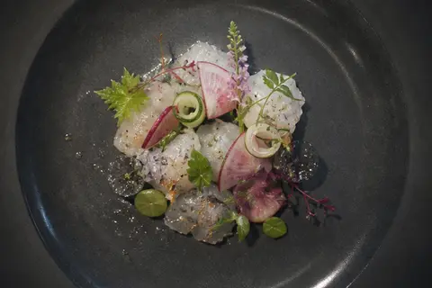
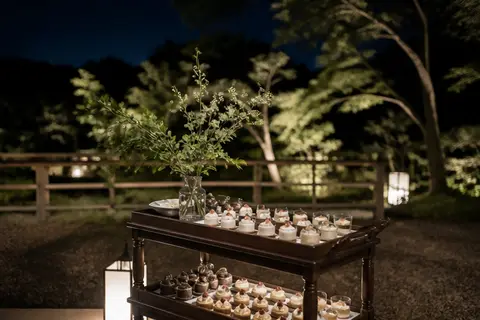
前菜からデザートまで7皿。ふたりの出身地の食材で組み替えられます。
お客様の声
式から半年たっても、会った人にまず料理の話をされます。温かいものが温かいまま出てきたと、両親が何度も言っていました。二人の出身地が離れているので、前菜を長野の野菜、メインを福岡の魚にしてもらいました。
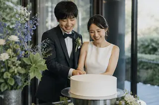
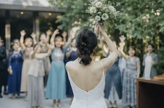
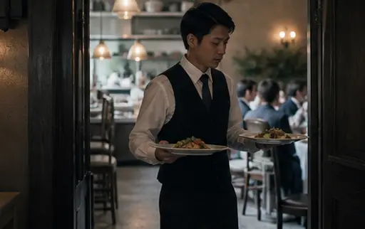
厨房から最も遠い席まで20歩。温度が落ちる前に届きます。
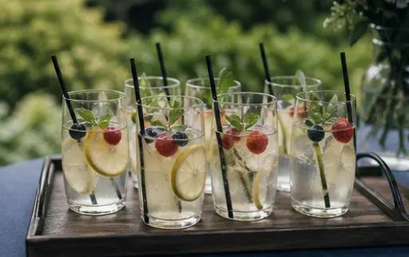
開宴前のガーデンで、その季節の果実を使った一杯を。
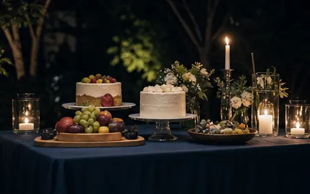
お開き前の30分、甘いものだけの台をガーデンに出します。
見て、食べて、それから決めてください。
TOKYO東京



KANAGAWA神奈川
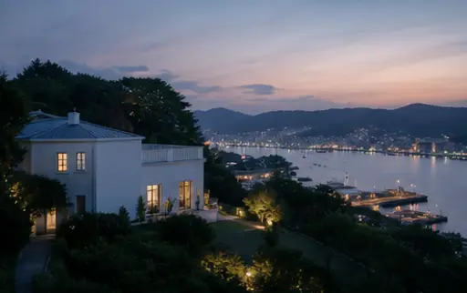
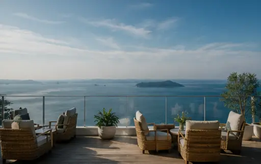
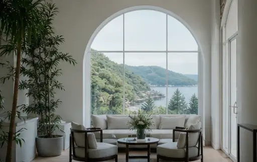
SAITAMA埼玉
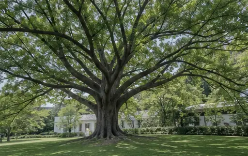
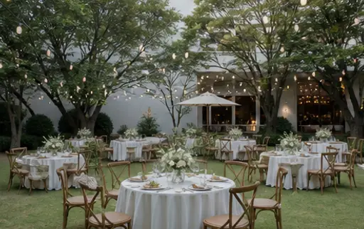
AICHI愛知
OSAKA大阪
FUKUOKA福岡